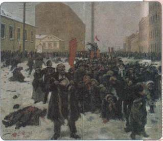
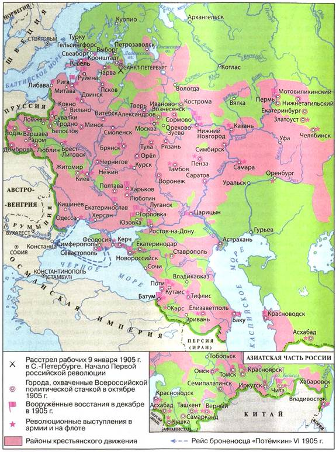
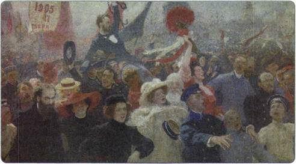
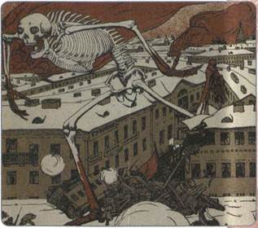
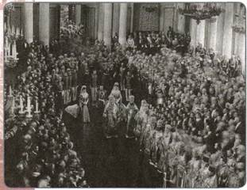
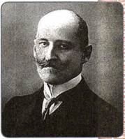

Чем была вызвана революция 1905—1907 гг.? Какие изменения произошли в России в результате революции?
1. Причины революции
Первая революция в России была порождена глубокими политическими и социально-экономическими противоречиями, сложившимися ранее и обострившимися в начале XX в.
Приверженность Николая II к самодержавной форме правления, отказ от предоставления населению политических свобод, категорическое неприятие идеи народного представительства во власти стали причиной нарастающего противостояния общества и власти. Крестьяне страдали от малоземелья. Произвол хозяев, низкая заработная плата, плохое материальное положение вызывали возмущение рабочих. В национальных районах страны экономические и политические проблемы усугублялись нежеланием правительства учитывать региональную специфику.
С началом Русско-японской войны ситуация в стране обострилась. Нежелание власти решать назревшие экономические, социальные и политические проблемы сверху вызвало попытку решить их снизу. Революция должна была ликвидировать самодержавный строй, установить парламентскую форму правления, предоставить народу демократические права и свободы, решить национальный вопрос, уничтожить помещичье землевладение. В решении этих задач были заинтересованы самые широкие слои населения — крестьяне, рабочие, предприниматели, интеллигенция. Они приняли активное участие в революции.
2. Начало революции
На Путиловском заводе в Петербурге 3 января 1905 г. в ответ на увольнение нескольких рабочих вспыхнула забастовка. Её поддержали все крупные предприятия города. Забастовка находилась под контролем зубатовской организации «Собрание русских фабрично-заводских рабочих города Санкт-Петербурга», которую возглавлял священник Г. А. Гапон. В его честолюбивой голове родилась мысль о встрече обиженного народа с его единственным заступником — царём-батюшкой. Возник план организации мирного шествия к Зимнему дворцу для подачи царю петиции о нуждах рабочих.

9 января 1905 г. на Васильевском острове Художник В. Е. Маковский
Утром 9 января 1905 г. празднично одетые рабочие вместе с жёнами и детьми, неся в руках иконы и портреты царя, двинулись с окраин к Зимнему дворцу. В мирном шествии участвовали более 140 тыс. человек. Но путь к Зимнему дворцу преградили полиция и войска. Требования полиции остановить шествие и разойтись рабочие оставляли без внимания, поэтому демонстрантов останавливали выстрелами. По официальным данным, жертвами стали от 130 до 200 человек, современники говорили о тысячах убитых и раненых. Эти события получили название Кровавое воскресенье и послужили толчком к началу революции.
Весть о расстреле демонстрации рабочих вызвала гнев и возмущение во всех слоях общества. Долго зревшее недовольство вылилось в революцию. Массовые беспорядки в Петербурге начались уже во второй половине дня 9 января. Рабочие разоружали полицейских, захватывали оружейные склады, сооружали баррикады. Забастовки рабочих охватили Москву, Ригу, ряд городов Украины, Польши, Закавказья. В январе — феврале 1905 г. бастовали 810 тыс. рабочих, выдвигавших как экономические, так и политические требования.
3. Развитие революции весной — летом 1905 г.
Весной 1905 г. революционное движение продолжало нарастать. Новый толчок к народному негодованию дали известия о поражении русской армии под Мукденом в феврале и флота в Цусимском проливе в мае 1905 г. По стране прокатились мощные стачки рабочих. В них приняли участие до 600 тыс. человек. Крупнейшей была начавшаяся в мае стачка текстильщиков в Иваново-Вознесенске. Избранный Совет рабочих уполномоченных превратился в орган рабочей власти в городе. При нём создали рабочие дружины, кассу для помощи бастующим. Совет принуждал лавочников отпускать в долг продукты на время стачки.
Поднялось на борьбу крестьянство. Движение охватило Орловскую и Курскую губернии, Поволжье, Польшу, Украину, Белоруссию, Среднюю Азию. Основными формами протеста крестьян оставались стихийные бунты, разгром дворянских имений, захват хлебных амбаров и складов. В некоторых районах Грузии возникли крестьянские комитеты, которые упразднили царские законы, отменили уплату государственных налогов и повинности в пользу помещиков. Латышские крестьяне проводили церковные демонстрации: собирались в храмах, но вместо службы произносили антиправительственные речи, пели революционные песни.

Революция 1905—1907 гг.
В июне 1905 г. произошло восстание матросов на броненосце «Князь Потёмкин-Таврический», находившемся на рейде недалеко от Одессы. Матросы взялись за оружие и убили нескольких офицеров. Подавляющее большинство кораблей Черноморской эскадры не поддержало мятежный экипаж. Броненосец оказался блокирован, но сумел прорваться в открытое море. Не имея запасов угля и продовольствия, он был вынужден уйти к румынским берегам и сдаться властям Румынии.
4. Всероссийская октябрьская стачка. Манифест 17 октября 1905 г.
Осенью 1905 г. центром революционного движения стала Москва. 19 сентября с экономическими требованиями выступили московские печатники. К ним присоединились рабочие большинства московских предприятий, в начале октября — железнодорожники, поддержанные рабочими почти всех железных дорог страны.
Стачка стала общероссийской. Она охватила 120 городов, в ней приняли участие 2 млн рабочих и служащих. Более чем в 50 городах и рабочих посёлках страны были созданы Советы рабочих депутатов, не только руководившие революционной борьбой, но и выполнявшие роль органов местной власти. 13 октября Совет рабочих депутатов появился в Петербурге.
Прекратились занятия в школах, гимназиях, университетах, не работали банки, аптеки, магазины. Многие выдающиеся художники, поэты, писатели откликнулись на революционные события произведениями, в которых обличалось самодержавие.
Всероссийская октябрьская стачка проходила под лозунгами «Долой царское правительство!», «Да здравствует демократическая республика!».
Верховная власть была вынуждена пойти на уступки. 17 октября 1905 г. царь подписал Манифест «Об усовершенствовании государственного порядка». Этот документ провозглашал дарование народу «незыблемых основ гражданской свободы»: неприкосновенность личности, свободы совести, слова, собраний и союзов. Было также обещано образовать новый орган власти — Государственную думу и привлечь к выборам в неё те слои населения, которые не имели избирательных прав (главным образом, рабочие, городская интеллигенция). Дума должна была стать законодательным органом, без одобрения которого никакой закон не может войти в силу (однако у императора было право в любой момент распустить Думу). Указом царя от 19 октября 1905 г. по типу европейских кабинетов министров создавалось объединённое коллегиальное правительство — Совет министров. Первым его председателем назначен С. Ю. Витте. Вскоре была отменена предварительная цензура печати.

17 октября 1905 г. Художник И. Е. Репин
5. Формирование монархических партий
Правом на свободу собраний и союзов, дарованным Манифестом 19 октября 1905 г., поспешили воспользоваться деятели общественного движения всех направлений. Происходит оформление политических партий.
Появился ряд монархических партий («Русское собрание», «Русская монархическая партия», «Союз русского народа», позднее, в 1908 г., «Союз Михаила Архангела»). Монархисты выступали за восстановление и укрепление самодержавия, православия, народности, которые считали началами исконно русскими, русскую народность объявляли «господствующей и первенствующей». Русский народ, полагали лидеры монархистов, неспособен на социальную вражду. Они искали врагов, смутьянов, виновных, как они считали, в охватившей страну смуте. Важное место в их идеологии занимал антисемитизм.
В период массовых манифестаций 1905—1907 гг. активно действовала боевая организация «Чёрная сотня», устраивавшая погромы и столкновения с революционными манифестантами. Черносотенцы придерживались крайне правых взглядов. Они выдвигали лозунги антисемитизма, защищали самодержавие и выступали против революционеров.
6. Формирование либеральных политических партий
Во время революции организационно оформились и либеральные партии.
Конституционно-демократическая партия (кадеты) вобрала в себя наиболее радикальные либеральные силы. Её учредительный съезд состоялся в октябре 1905 г. Основные положения программы партии: установление конституционного строя, увеличение крестьянских наделов, частичное отчуждение помещичьих земель, отмена сословных привилегий, равенство всех перед законом, свобода личности, слова, собраний, признание права рабочих на стачки и 8-часовой рабочий день, права наций на развитие культуры и языка. Основным методом претворения в жизнь своей программы кадеты считали давление на правительство через легальные организации, прежде всего Думу.
Ядро партии кадетов составляли учёные, творческая интеллигенция, преуспевающие врачи, адвокаты, учителя, средние и мелкие служащие. Вошли в неё и либерально настроенные буржуазия, помещики. Лидером кадетов был историк П. Н. Милюков. Численность партии в 1905—1906 гг. составляла, по разным источникам, от 50 до 100 тыс. человек.
Умеренное крыло либерального движения представляла партия «Союз 17 октября» (октябристы), которая начала формироваться в ноябре 1905 г. из представителей земского движения, признавших Манифест 17 октября поворотным пунктом в истории России. Главную цель октябристы видели в «содействии правительству, идущему по пути спасительных реформ». Их программу открывало требование сохранить единство и нераздельность Российского государства. Частную собственность октябристы считали основой основ экономики. Возможность частичного отчуждения помещичьей земли характеризовали как самый крайний случай. Октябристы предлагали уравнять крестьян в правах с другими сословиями, активизировать переселенческую политику, продажу крестьянам государственных и удельных земель. «Союз 17 октября» был чуть ли не единственной партией в России, которая не выдвигала требования 8-часового рабочего дня, считая, что русские рабочие, в отличие от западноевропейских, имеют слишком много выходных в течение года. Октябристы ограничивали право рабочих на стачки в отраслях, имевших государственное значение.
К «Союзу 17 октября» тяготела крупная, преимущественно московская, буржуазия, помещики. Среди октябристов было немало отставных военных чинов, представителей профессуры, инженеров, управляющих частными предприятиями. Председателем Центрального комитета «Союза 17 октября» был избран фабрикант А. И. Гучков. Численность партии в 1906 г. составляла 75—77 тыс. человек.
7. Декабрьское вооружённое восстание в Москве
Революционные партии, расценив Манифест 17 октября как попытку самодержавия хитростью и уступками остановить революцию, стали готовиться к вооружённому восстанию. Очень большие деньги были истрачены на покупку оружия и создание в крупных промышленных центрах рабочих дружин. В начале декабря Московский совет рабочих депутатов (создан в ноябре 1905 г.) постановил начать всеобщую политическую забастовку. Более 100 тыс. рабочих прекратили работу. К москвичам присоединились 110 тыс. петербуржцев. Правительство бросило против бастующих войска. Рабочие взялись за оружие.
К 10 декабря стачка в Москве переросла в восстание. В Московском вооружённом восстании в декабре 1905 г. участвовали около 6 тыс. рабочих (из них имели оружие около 2 тыс.).
Семь дней они вели бои с жандармскими и армейскими силами. 15 декабря в Москву из Петербурга прибыл гвардейский Семёновский полк и другие войска. Начался артиллерийский обстрел баррикад и рабочих кварталов.
Центр борьбы переместился на Пресню. Силы оказались не равны. 19 декабря 1905 г. по решению Московского совета восстание было прекращено.
Выступление с самого начала было обречено на поражение, жертвами стали тысячи расстрелянных, арестованных, избитых и искалеченных людей.

«Жупел революции». Художник Б. М. Кустодиев
Октябрьские и декабрьские события стали высшей точкой революции. В 1906—1907 гг. рабочие и крестьянские выступления, волнения в армии и на флоте пошли на убыль.
8. «Основные законы» 1906 г.
11 декабря 1905 г., в разгар вооружённого восстания в Москве, был издан указ о выборах в Государственную думу. Он открывал возможность участвовать в выборах практически всему мужскому населению страны, достигшему 25 лет. Исключение составляли лишь солдаты, студенты, подённые рабочие и часть кочевников.
Хотя этот указ и стал большим шагом вперёд в развитии избирательного права, выборы были не всеобщими: в них не могли участвовать женщины, военнослужащие, молодёжь до 25 лет, рабочие мелких (менее 50 работников) предприятий, некоторые национальные меньшинства. Выборы были не равными: один голос помещика приравнивался к 3 голосам буржуазии, 15 голосам крестьян и 45 голосам рабочих. Выборы были не прямыми: для крестьян — четырёхстепенные, для рабочих — трёхстепенные, для буржуазии и помещиков — двухстепенные. Члены Государственной думы, согласно закону, избирались на 5 лет.
Манифест 20 февраля 1906 г. наделил законодательными функциями Государственный совет. Царь видел в нём противовес Думе. Половина членов Государственного совета назначалась царём, половина избиралась Синодом, дворянскими и земскими собраниями, крупными организациями промышленников и торговцев и др.
23 апреля 1906 г. Николай II утвердил «Основные законы Российской империи» в новой редакции. Императорская власть определялась как «верховная самодержавная». Монарх сохранил всю полноту власти по управлению страной через ответственное только перед ним правительство, руководство внешней политикой, армией и флотом. Он мог издавать в перерывах между сессиями Думы законы, если того требовали чрезвычайные обстоятельства. Согласно Основным законам законодательная власть распределялась между императором, Государственным советом и Государственной думой. Теперь любой законопроект утверждался сначала Думой, затем Государственным советом и только потом поступал на подпись к царю.
9. Деятельность I Государственной думы
27 апреля 1906 г. в присутствии Николая II в Петербурге состоялось торжественное открытие I Государственной думы. Её председателем был избран профессор Московского университета кадет С. А. Муромцев. Большевики и эсеры выборы в Думу бойкотировали.
Депутаты, состоявшие членами одной партии или близкие по своим взглядам, распределились в Думе по фракциям. Разрабатывая положение о выборах, правительство ставило цель обеспечить преобладание в Думе крестьян. Оно надеялось, что их консерватизм, склонность к традициям станут противовесом либерализму кадетов. Однако крестьяне, равнодушные в целом к политическим свободам, идеям парламентаризма, были одержимы мечтой о переделе земли. Не получив помещичьей земли от царя, они пришли за ней в Думу. Аграрный вопрос занял центральное место в деятельности Думы.

Церемония открытия I Государственной думы
23 мая 1906 г. фракция трудовиков выступила с законопроектом, подписанным 104 депутатами. В процессе обсуждения часть трудовиков выдвинула ещё более радикальный проект («Проект 33-х»): немедленное и полное уничтожение частной собственности на землю и объявление её вместе с недрами и водами общей собственностью всего населения России. Прения по аграрному вопросу оказались очень острыми. 9 июля 1906 г. царь распустил I Государственную думу.
10. Деятельность II Государственной думы
II Государственная дума начала свою работу 20 февраля 1907 г. Председателем Думы был избран кадет Ф. А. Головин.
Тон во II Думе задавали левые партии. Они потребовали полной и безвозмездной конфискации помещичьей земли и превращения всей земли в общенародную собственность. Роспуск II Думы стал неизбежным. Но чтобы не связывать его с аграрным вопросом, правительство обвинило 55 социал-демократических депутатов в заговоре и потребовало дать санкцию на немедленный арест 16 из них. Дума ответила созданием специальной комиссии для разбора дела. Однако правительство и не думало ждать итогов работы комиссии. 3 июня 1907 г. II Дума была распущена. Одновременно без согласия Думы император издал новый избирательный закон. Этим актом нарушались Основные законы 1906 г. Поэтому 3 июня 1907 г. считается датой окончания революции в России.
11. Итоги революции

Ф. А. Головин
В результате революции 1905—1907 гг. был создан первый в истории России представительный орган власти, имевший законодательные полномочия, — Государственная дума, ограничившая власть императора.
Новая политическая система получила название думская монархия. Трудящиеся наделялись правом создавать профсоюзы, культурно-просветительские общества, кооперативные, страховые организации.
Подданным Российской империи были дарованы многие демократические права: неприкосновенность личности, свобода совести, слова, собраний и союзов, выпуска печатных изданий. Сформировались легальные политические партии. Отменялся циркуляр 1897 г. об уголовном наказании стачечников, легализовывались с некоторыми оговорками экономические забастовки, ликвидировалось право земских начальников налагать на крестьян административные взыскания, а также использовать телесные наказания. Власти были вынуждены смягчить национальную политику, разрешить применять родной язык в национальных школах.
Продолжительность рабочего дня была сокращена до 9—10 ч (некоторые предприниматели по собственной инициативе установили 8-часовой рабочий день), а заработная плата повышена. Началось внедрение системы заключения коллективных договоров рабочих с предпринимателями, в которых определялись минимум зарплаты, продолжительность рабочего дня, пособия по болезни.
Были отменены выкупные платежи, которые крестьяне платили с 1861 г., снижена арендная плата за землю, сельскохозяйственным рабочим повышена зарплата.
ПОДВЕДЁМ ИТОГИ
Первая российская революция не смогла разрешить все проблемы, которые её породили, но она заставила власть осуществить ряд неотложных преобразований.
Вопросы и задания для работы с текстом параграфа
1. Каковы причины революции 1905—1907 гг.? 2. В чём заключались особенности программных установок и тактики монархических партий в годы революции? 3. Чем различались программы кадетов и октябристов? Почему октябристов называли умеренными либералами? 4. В связи с чем историки считают Всероссийскую октябрьскую стачку и Декабрьское восстание в Москве высшей точкой революции? 5. Как изменилась система органов государственной власти в ходе революции? 6. Расскажите, что нового вносил в систему выборов указ 11 декабря 1905 г. 7. Каковы итоги и значение революции 1905—1907 гг. в России?
Изучаем документы
ИЗ МАНИФЕСТА «ОБ УСОВЕРШЕНСТВОВАНИИ ГОСУДАРСТВЕННОГО ПОРЯДКА» 17 ОКТЯБРЯ 1905 г.
Смуты и волнения в столицах и во многих местностях империи нашей великой и тяжкой скорбью преисполняют сердце наше. <...>
Великий обет царского служения повелевает нам всеми силами... стремиться к скорейшему прекращению столь опасной для государства смуты. <...>
На обязанность правительства возлагаем мы выполнение непреклонной нашей воли:
1. Даровать населению незыблемые основы гражданской свободы на началах действительной неприкосновенности личности, свободы совести, слова, собраний и союзов.
2. ...Привлечь... к участию в Думе... те классы населения, которые ныне совсем лишены избирательных прав...
3. Установить как незыблемое правило, чтобы никакой закон не мог воспринять силу без одобрения Государственной думы. <...>
1. Какие права получило российское население? 2. Создание какого нового органа государственной власти было обещано в Манифесте? Какими полномочиями он наделялся? 3. Оцените значение Манифеста.
ИЗ РАБОТЫ СОВРЕМЕННЫХ ИСТОРИКОВ А. Н. БОХАНОВА И М. М. ГОРИНОВА «ИСТОРИЯ РОССИИ С ДРЕВНЕЙШИХ ВРЕМЁН ДО КОНЦА XX ВЕКА»
В общей сложности в Первую думу было избрано 478 депутатов. По политической принадлежности они распределились следующим образом: кадетов — 176, октябристов — 16, беспартийных — 105, крестьян-трудовиков — 97, социал-демократов (меньшевиков) — 18, а остальные входили в состав регионально-национальных партий и объединений, в значительной части примыкавших к либеральному крылу. <...>
Депутаты хотели всего и сразу, и это их желание делало Думу больше похожей на антиправительственный митинг, чем на работу серьёзного и ответственного государственного органа. Разгорячённые баталиями революционных битв, многие смотрели на думскую трибуну как на новый инструмент социальной борьбы... Всё это происходило в атмосфере непрекращающегося террора революционеров. <...>
Выборы во II Государственную думу проходили в начале 1907 г., и первая сессия её открылась 20 февраля 1907 г. В общей сложности было избрано 518 депутатов: кадетов — 98, трудовиков — 104, социал-демократов — 68, эсеров — 37, беспартийных — 50, октябристов — 44. Остальные голоса получили правые (националисты), представители регионально-национальных партий, казаки и некоторые мелкие политические объединения.
Состав II Государственной думы отразил поляризацию сил в обществе, и хотя среди депутатов значительную группу составляли правые, перевес был на стороне левых, так как кадеты часто солидаризировались с ними.
1. Сравните партийный состав I и II Государственных дум, сделайте выводы.
2. Можно ли говорить о том, что II Государственная дума была более «левой» по своим политическим взглядам по сравнению с предыдущей?
Думаем, сравниваем, размышляем
1. Сравните программные требования партий кадетов и октябристов. Почему октябристов называют умеренными либералами? 2. Подготовьте сообщение на тему «Чем революция отличается от мятежа, восстания, заговора, бунта и других форм насильственной смены власти». 3. Составьте в тетради таблицу «Развитие революции в 1905 г.», отразив в ней основные этапы революции и итоги каждого этапа. 4. Изучите программы либеральных и социалистических партий, участвовавших в революции. Выберите программу, которую вы считаете наиболее близкой для большинства населения России того периода. Докажите свой выбор, приводя аргументы и примеры.
ИСТОРИКИ СПОРЯТ
Ю. С. Пивоваров: «Революция 1905—1907 гг. была самой успешной российской революцией, в результате которой был заключён компромисс между обществом и властью, но обе части — и общество, и царская бюрократия — изначально стремились выйти за рамки компромисса».
В. Г. Тюкавкин: «Принятие «Основных законов» 1906 г. означало, по сути, принятие первой конституции России. После политических перемен 1905—1906 гг. говорить о России как о самодержавной монархии нет оснований».